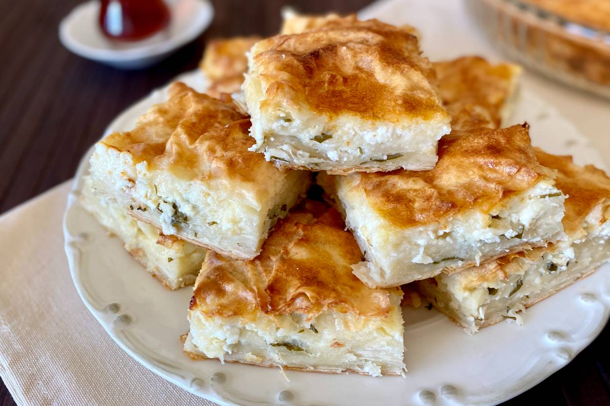

BOREK
Description
Greatest gift of God to the universe. This food will take you to the space and back, tell Elon that he doesn't need SpaceX anymore. I would sell my soul for this. West is SLEEPING on borek I stg.
Best drunk food, best sober food, best breakfast, best dinner, best thing to eat when you're hungry, best thing to eat when you're full. Just best thing to eat in general.
If my mom refused to make me borek. I may or may not kidnap her and wouldn't let her go till she makes me some. Then she would beat me with her slipper. It's worth it tho. Anything is worth for my special borek.
If it comes to it, I would take a bullet for that greasy godsent cheese heaven pastry. I got insurance so I'd be fine lol.
Do yourself a favor and try it please. Think of it as an investment. It will broaden your view of life.

Ingredients
- 1 egg
- 150 ml olive oil
- 75 ml yogurt
- 75 ml whole milk
- 3 large yufka
- nigella and sesame seeds
- 175 g feta cheese
- 75 gr Turkish shredded kasar cheese
- 15 g leaves of flat leaf parsley, roughly chopped
Steps (or stairway to heaven cuz this is where you will go after eating this)
- Preheat the oven to 200 C (390 F), fan. Grease a medium sized oven tray (mine is 34x24 cm (13½ x 9½ in)) well with olive oil, all the way to the top of the edges.
- Whisk the egg and olive oil, then add the yoghurt and whole milk and whisk again until smooth. Set aside.
- Mix the cheeses and set aside.
- Place one sheet of yufka in the oven tray, so it completely covers the base and sides in a single layer. Cut off any excess, making sure to leave at least 2-3 cm (1 in) over the top of the tray on each side.
- Spread a couple of tablespoons of the egg mixture on the yufka. Tear the second sheet of yufka as well as the excess you cut off into large pieces. Dip each piece into the egg mixture and layer it in a wavy shape, so all of the base is covered. Each piece of yufka should be moist, but not excessively wet.
- Scatter the cheese mixture evenly into the tray and top with flat leaf parsley.
- Tear the third and final sheet of yufka into large pieces, keeping a roughly rectangular piece slightly smaller than your oven tray separate. Dip the yufka pieces (except the rectangular one) into the egg mixture and layer them in a wavy shape, just like the previous layer. You should be able to cover all of the filling with this.
- Place the remaining rectangular piece of yufka on top, then fold in the sides, making sure to brush with the egg mixture as necessary. Brush with more of the egg mixture on top, but don't overdo it. You may not need everything. For an extra crispy top, drizzle a tablespoon or so of olive oil on top.
- Sprinkle the borek with nigella or sesame seeds. Bake in the middle of the oven until the borek is golden on top and cooked through, 30-40 minutes.
- Leave to cool, then cut into 10-12 pieces. Enjoy lukewarm or cooled.